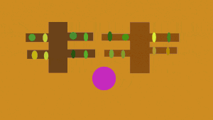

The witch takes out her wand and cast a spell to make it snow.
First page Credits: Additonal audio xtrgamr. July 24th, 2014. Silverplatter Audio "Snow Effects Libary" May 27th, 2018. HDwarfilms "Lightning Storm Sound Effect" Dec 22, 2009. 2MirrorsDialougue "Magic Sound Effects" Oct 21, 2018. Everyday Cinematic Sounds "Footsteps Crunchy Snow Walking and Running| HQ Sound Effects" Feb 25th. Freesound and Youtube
The kids immediatley comes running out of their houses in excitment and starts playing in the snow, which in turns put a smile on the witch's face